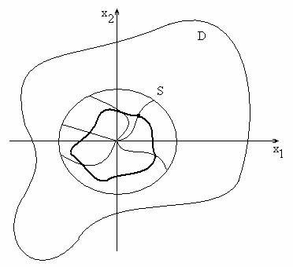

\(\textbf{Уравнение возмущенного движения.}\) \[\begin{equation}\label{3} \dot{X}=F(t,X).\tag{3} \end{equation}\]
\(\Gamma:\) выполнены условия Т.\(\exists\) и \(\exists!\)
Точка \(X^0=(x_1^0,x_2^0,…,x_n^0)\) называется \(\textbf{точкой покоя (положением равновесия)}\) динамической системы (\ref{3})), если \(F(t,X^0)\equiv 0\).
Если \(X^0\) - точка покоя динамической системы (\ref{3}), то \(X(t)\equiv X^0\) - решение системы.
\(X=\Psi(t)\) - решение, исследуемое на устойчивость (невозмущенное движение).
\(X=Y(t)\) - любое другое решение системы (возмущенное движение).
Разность \(Z(t)=Y(t)-\Psi(t)\) называется возмущением.
Выведем ДУ, которому удовлетворяет возмущение. Имеем \[1)\;Y(t)=Z(t)+\Psi(t),\] \[2)\;\dot{Y}(t)\equiv F(t,Y(t)),\;\dot{\Psi}(t)\equiv F(t,\Psi(t)),\] \[\dot{Z}(t)=\dot{Y}(t)-\dot{\Psi}(t)=F(t,Y(t))-F(t,\Psi(t))=\] \[=F(t,Z(t)+\Psi(t)))-F(t,\Psi(t))=G(t,Z(t)).\] \(\dot{Z}=G(t,Z)\) - уравнение возмущенного движения.
Невозмущенному движению \(X=\Psi(t)\) соответствует тривиальное решение \(Z\equiv 0\) системы возмущенного движения(положение равновесия).
Автономные системы: \[\begin{equation}\label{4}\dot{X}=F(X). \tag{4} \end{equation}\]
Пусть \(F(X)\) удовлетворяет условию \(F(0)=0\), тогда \(X\equiv 0\) - положение равновесия системы (\ref{4}).
\(\textbf{Задача устойчивости}\) тривиального решения \(\textbf {относительно начальных возмущений}\).
Введем обозначения:
\(X=\varphi(t;\xi)\;(\xi\in \mathbb{R}^{n}\))- это решение системы (\ref{4}), удовлетворяющее начальному условию \(\varphi(0;\xi)=\xi.\)
\(\textbf {Условие продолжимости вправо:}\)
найдется некоторая \(\sigma\)-окрестности начала координат в \(\mathbb{R}^{n}\), что для любых начальных данных \(\xi\) из этой \(\sigma\)-окрестности решение \(X=\varphi(t;\xi)\) определено для любого \(t\ge 0.\)
Тривиальное решение \(X\equiv0\) системы (\ref{4}) называется устойчивым по Ляпунову, если \[\forall\varepsilon>0\;\exists\delta>0\;(\delta\le\varepsilon)\; (\forall\xi:\; |\xi|<\delta\Rightarrow\left| \varphi(t;\xi)\right|<\varepsilon)\] для всех \(t\ge0\)
Тривиальное решение \(X\equiv0\) системы (\ref{4}) называется асимптотически устойчивым, если оно
1) устойчиво по Ляпунову
и
2) \(\exists\rho>0,\) \(\forall\xi:|\xi|<\rho,\) имеет место \[\lim\limits_{t\rightarrow+\infty}\varphi(t;\xi)=0.\]
\(\textbf {Понятие функции Ляпунова.}\) \[\dot{X}=F(X), \quad X=(x_1,x_2,...,x_n)\in R^n\] \[V=V(X)=V(x_1,x_2,...,x_n)\] \(V:V\rightarrow R\) - функция Ляпунова, если
1) \(V\) определена в открытой области \(D\subseteq R^n\) и \(D\) содержит начало координат (н.к.), т.е \(X=0.\) Значит, в область \(D\) можно вписать \(n\)-мерную сферу с центром в н.к.
2) \(V(0)=0.\)
3) \(V(X)\) - непрерывна в \(D\) и существуют \(\frac{\partial V}{\partial x_i}\), \(i=1,2,...,n\), которые также непрерывны в \(D.\)
Среди функций Ляпунова выделяют следующие виды функций:
1. Функция Ляпунова \(V(X)\), \(X\subseteq D\) называется определенно положительной, если \[\forall X\subseteq D: X\neq 0\quad V(X)>0.\] 2. Функция Ляпунова \(V(X)\), \(X\subseteq D\) называется определенно отрицательной, если\[\forall X\subseteq D: X\neq 0\quad V(X)<0.\] 3. Функция Ляпунова \(V(X)\), \(X\subseteq D\) называется постоянно положительной, если \[\forall X\subseteq D\quad V(X)\geq 0.\] 4. Функция Ляпунова \(V(X)\), \(X\subseteq D\) называется постоянно отрицательной, если \[\forall X\subseteq D\quad V(X)\leq 0.\] 5. Функция Ляпунова \(V(X)\), \(X\subseteq D\) называется знакопеременной, если в любой окрестности н.к. существуют точки, в которых \(V(X)\) имеет разные знаки.
Примеры функций Ляпунова:
1) \(V(x_1,x_2)=x_{1}^{2}+x_{2}^{2}\) \(\;\;\)(определенно положительная);
2) \(V(x_1,x_2)=(x_{1}-x_{2})^{2}\) \(\;\;\)(постоянно положительная);
3) \(V(x_1,x_2)=x_{1}^{2}-x_{2}^{2}\) \(\;\;\)(знакопеременная);
4) \(V(x_1,x_2,x_3)=x_{1}^{2}+x_{2}^{2}\) \(\;\;\)(постоянно положительная)
\(\textbf {Полная производная функции Ляпунова в силу системы}\)
\(\begin{equation}\label{5} \dot{X}=F(X)\; \Leftrightarrow \; \forall i \quad \dot{x}_i=f_i(x_1,x_2,...,x_n) \tag{5} \end{equation}\)
Пусть \(V(X)\) - какая-то функция Ляпунова.
Зафиксируем \(X\) (произвольная точка из \(\Gamma\)), \(t_0\) - произвольный момент времени и \[\varphi(t)=(\varphi_{1}(t),\varphi_{2}(t),...,\varphi_{n}(t))\] - решение рассматриваемой системы, такое что \[\varphi(t_0)=X.\]
Тогда \[V(t)=V(\varphi_{1}(t),\varphi_{2}(t),...,\varphi_{n}(t)).\]
Функция \(\dot{V}_{(5)}=\frac{dV}{dt}\Big|_{t=t_0}\) называется \(\textbf {полной производной функции Ляпунова в силу системы}\) \[\frac{dV}{dt}\Big|_{t=t_0}=\sum\limits_{i=i}^{n}\frac{\partial V(\varphi(t))}{\partial x_i}\cdot\frac{d\varphi_i}{dt}\Big|_{t=t_0}=\] \[=\sum\limits_{i=i}^{n}\frac{\partial V(\varphi(t))}{\partial x_i}\cdot f_i(\varphi_{1}(t),\varphi_{2}(t),...,\varphi_{n}(t))\Big|_{t=t_0}=\sum\limits_{i=i}^{n}\frac{\partial V(X)}{\partial x_i}\cdot f_i(X).\] Формула для полной производной функции Ляпунова в силу системы (\ref{5}) \[\forall X\subset D \; \dot{V}_{(5)}=\sum\limits_{i=i}^{n}\frac{\partial V(X)}{\partial x_i}\cdot f_i(X).\] При этом, \(\dot{V}=\dot{V}(X)\) - снова функция Ляпунова, т.к. непрерывно дифференцируема в области \(D\) и \(\dot{V}(0)=0\).
Пусть \(С\)- произвольная константа. \(\textbf {Линия уровня}\) функции \(V(X)\) - это множество точек из \(R^n\), удовлетворяющих \(V(X)=C.\) \(\textbf {Множество Лебега}\) для функции \(V(X)\) - это множество точек из \(R^n\), удовлетворяющих \(V(X)\leq C.\)
Пусть функция Ляпунова \(V(X)\) определенно положительна (определенно отрицательна) в открытой области \(D.\) Тогда для любой сферы \(S\), целиком лежащей в \(D\) и с центром в начале координат, существует число \(h>0\) (\(h<0\)) , такое что при любом \(C:\)\(0<\)\(C<\)h (\(h<\)\(C<\)0), любая непрерывная кривая, соединяющая начало координат с произвольной точкой сферы \(S,\) обязательно пересекает линию уровня функции Ляпунова \(V(X)=C.\)

Линия уровня не может проходить через начало координат, т.к. существует единственная точка (н.к.), в которой \(V(X)\) обращается в нуль, но также не может выйти за границу сферы \(S.\) Следовательно, все линии уровня вложены друг в друга и не пересекаются, а значит, приближаются к н.к. при радиусе сферы, стремящимся к нулю, и бесконечно расширяются при бесконечном увеличении радиуса сферы.
Для доказательства необходимо найти \(h\) с нужными свойствами.Положим \[h=\min_{X\in S}V(X).\] Этот минимум достигается, т.к. \(V(X)\) определена и непрерывна на компакте \(S\): \(h>0,\) т.к значение функции Ляпунова во всех точках, лежащих на сфере, строго больше нуля.
Пусть \(\psi(s)\) - непрерывная функция, описывающая кривую, соединяющую н.к. с произвольной точкой сферы \(S.\)
Построим функцию \[v(s)=V(\psi(s)),\] \[v(0)=V(\psi(0))=V(0)=0,\] \[v(a)=V(\psi(a))\geq h,\] т.к. \(\psi(a)\) лежит на сфере \(S\) и \(h\) - минимальное значение \(V(X)\) в точках, лежащих на сфере \(S.\) функция \(v(s)\) непрерывна на \([0,a]\) как композиция непрерывных функций. Тогда \[\forall C\in (0,h)\quad \exists {\bar s}\in (0,a):v({\bar s})=C.\] Значит кривая \(\psi(s)\) пересекает линию уровня: \[V(\psi({\bar s}))=v({\bar s})=C.\] \(\textbf{Лемма доказана.}\)
\(\textbf {Теоремы второго метода Ляпунова}\)
В теории устойчивости движения выделяют два метода Ляпунова.
\(\bullet\)Первый, или прямой метод Ляпунова используется для исследования устойчивости тривиального решения системы по виду её общего решения. Этот метод используется для автономных систем, когда известно, как найти общее решение.
\(\bullet\)Второй метод Ляпунова применим для нелинейных систем и позволяет исследовать тривиальное решение на устойчивость, не находя общего решения системы.
Если существует функция Ляпунова \(V(X)\), определенно положительная в открытой области \(D\), производная которой в силу системы (\ref{5}) является постоянно отрицательной или тождественно равной нулю, то тривиальное решение \(X\equiv 0\) системы (\ref{5}) устойчиво.
Требуется показать, что \[\forall\varepsilon>0\; \exists\delta>0\; (\delta<\varepsilon)\; (\forall\xi:\; |\xi|<\delta\Rightarrow\left| \varphi(t;\xi)\right|<\varepsilon)\] для всех \(t\ge0.\)
Здесь \[X=\varphi(t,\xi),\] - решение системы (\ref{5}), удовлетворяющее начальному условию \[\varphi(0,\xi)=\xi.\] Зафиксируем \(\varepsilon>0.\)
Введем обозначения: \[{\bar B}_\varepsilon=\{ X\in R^n:|X|\leq\varepsilon\}\;–\;замкнутый\;шар;\] \[B_\varepsilon=\{ X\in R^n:|X|<\varepsilon\}\;–\;открытый\;шар;\] \[S_\varepsilon=\{ X\in R^n:|X|\leq\varepsilon\}\;–\;сфера.\]
Пусть \(\varepsilon>0\) такое, что \({\bar B}_\varepsilon\in D.\)
Положим \[l=\min_{X\in S_\varepsilon}V(X)>0.\]
Величина \(V(X)\) непрерывна в \(D\) и \(V(0)=0,\) тогда по определению непрерывности в нуле \(\exists\delta>0 \quad (\forall\xi\in R^n:\)\(|\xi|<\)\(\delta)\Rightarrow\)\( V(\xi)<\)\(l\)
Покажем, что \(\delta\) искомое, т.е. \[(\forall\xi\in R^n:|\xi|<\delta)\Rightarrow (\forall t\ge 0 \quad \varphi(t,\psi)<\varepsilon):\]
1) при \(t=0\quad |\varphi(0,\xi)|=|\xi|<\delta<\varepsilon;\)
2)О.П.:\[\exists t=T>0:\forall t\in [0,T) \quad |\varphi(t,\xi)|<\varepsilon\] \[и\;\varphi(T,\xi)|=\varepsilon\;в\;силу\;непрерывности\;решения.\]
Тогда :
а) \(\varphi(T,\xi)\in S_\varepsilon\Rightarrow V(T,\xi)\geq l; \)
б) \(\dot {V}_\varepsilon (\varphi(t,\xi))\leq 0 \Rightarrow V(\varphi(t,\xi))\) не возрастает на \([0,+\infty)\) и \(V(\varphi(T,\xi))\leq V(\varphi(0,\xi))=\)\(V(\xi)<\)\(l;\)
а) и б) дают противоречие, а значит, полученное является искомым, участвующим в определении устойчивости.
\(\textbf{Теорема доказана.}\)
Если существует функция Ляпунова \(V(X)\), определенно положительная в открытой области \(D\), производная которой в силу системы (\ref{5}) является определенно отрицательной, то тривиальное решение \(X\equiv 0\) системы (\ref{5}) асимптотически устойчиво.
Если существует функция Ляпунова \(V(X)\), не являющаяся постоянно положительной в любой окрестности начала координат, производная которой в силу системы (\ref{5}) является определенно отрицательной, то тривиальное решение \(X\equiv 0\) системы (\ref{5}) неустойчиво.